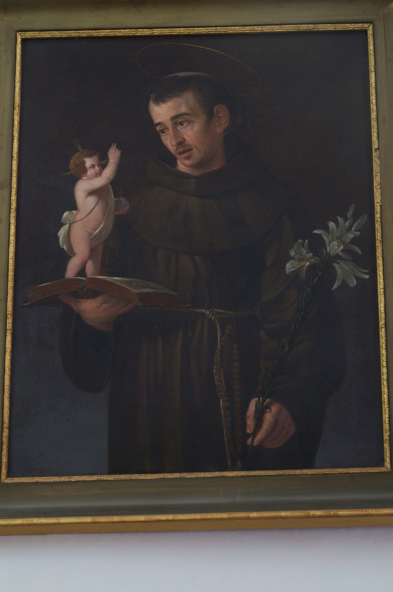

San Antonio de Padua (1195-1231) fue un fraile franciscano, profesor de teología y gran predicador, famoso por los numerosos milagros que se le atribuyen. En Mallorca es conocido popularmente como *sant Antoni dels Albercocs*. Nació en Lisboa, motivo por el cual también se le conoce como san Antonio de Lisboa, y le pusieron por nombre Fernando. A los quince años ingresó en la orden de los agustinos, pero años después entró en el convento franciscano de San Antonio de Coimbra y fue cuando adoptó el nombre de Antonio. Sus sermones le dieron pronto una fama extraordinaria y se le considera uno de los grandes predicadores de la historia de la Iglesia Católica. También destacó como teólogo, y San Francisco de Asís le confió la enseñanza de la teología a los frailes franciscanos, tarea que ejerció en varios centros. Durante los últimos años de su vida se estableció en Padua, donde continuó su actividad de predicación y enseñanza hasta poco antes de morir. Su popularidad y fama de milagrero eran tan grandes que fue canonizado menos de un año después de su muerte. De hecho, es el segundo santo que más rápidamente ha sido canonizado en la historia de la Iglesia Católica. En 1946 fue proclamado doctor de la Iglesia con el título de Doctor Evangélico.
En este cuadro se le representa con la cabeza tonsurada y vistiendo el hábito franciscano, de color marrón con cordón. De la cintura le cuelga también un rosario, elemento de devoción habitual entre los franciscanos. Sujeta con una mano una rama de lirios blancos, símbolo de pureza, y con la otra sostiene un libro con un Niño Jesús encima. El libro simboliza su faceta de teólogo y predicador, mientras que el Niño Jesús refiere a una ocasión en que se le vio sosteniéndolo en brazos en medio de un gran resplandor. A menudo, como en este caso, el Niño Jesús está sobre el libro en alusión a que, según una tradición, se le apareció mientras leía as Sagradas Escrituras.